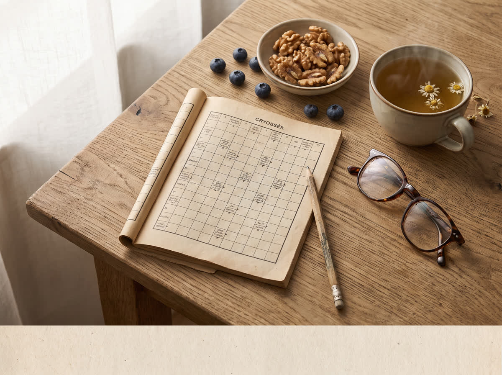
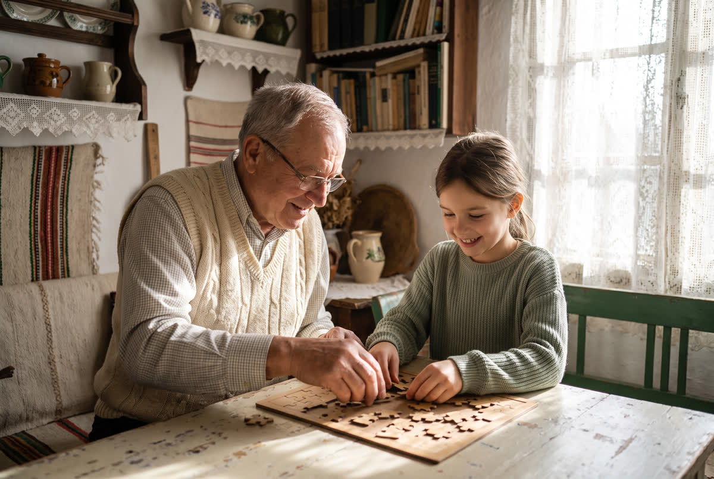

A legtöbben egyetlen szokásra figyelnek — pedig lehet, hogy egy másik, ritkán említett rész hiányzik a napi rutinból
Egy rövid videó bemutatja azt a hétköznapi sorrendet, amelyet sokan észre sem vesznek, amikor a figyelmüket és szellemi frissességüket szeretnék tudatosabban támogatni.
Előfordul, hogy egy név vagy egy feladat nem jut azonnal eszébe? Sokan ilyenkor rögtön egyetlen megoldást keresnek: több rejtvényt, több listát vagy több „agytornát”. A rövid videó azonban egy korábbi kérdéssel kezdődik: mi történik azzal a néhány perccel, mielőtt egyáltalán nekiállunk?
Nem egy titkos összetevőről és nem egy bonyolult rendszerről van szó. A videó azt járja körül, hogyan kapcsolódhat egymáshoz az új élmény, a társas kapcsolat, a mozgás, a pihenés és az a bizonyos napi sorrend, amelyről a legtöbb ember egyszerűen megfeledkezik.
„Nem az a legérdekesebb kérdés, mit teszünk a rutinunkba — hanem az, miért éppen abban a sorrendben tesszük.” Ezt a hétköznapi nézőpontot bontja ki a rövid videó.
Miért nem elég csak „több agytornát” végezni?
A megszokott rutin megnyugtató, de az elme számára értékes lehet, ha időnként új feladatokkal találkozik. Egy új recept, egy útvonal, egy társasjáték vagy néhány idegen nyelvű kifejezés is adhat új impulzust. A videóban azonban nem ez a legmeglepőbb rész.
Az érdekesebb kérdés az, melyik ponton illesztjük ezeket a napba. A rövid útmutató egy egyszerű, megfigyelhető sorrendet mutat be, amely segít végiggondolni, hogyan lehet a figyelemnek, az ismétlésnek és az új élményeknek valódi helyet teremteni a hétköznapokban.

Négy kérdés, amelyet a videó egymás után tesz fel
- Új inger: mikor találkozott utoljára olyan feladattal, amely valóban felkeltette a kíváncsiságát?
- Kapcsolódás: mikor jut hely a napban egy zavartalan beszélgetésre vagy közös programra?
- Ritmus: van-e egy rövid, ismételhető átmenet a sűrű nap és a pihenés között?
- Mozgás: melyik könnyű, örömteli aktivitást lehetne egy másik napi lépéshez kapcsolni?
A videó legváratlanabb része nem egy új feladat
Az új készségek gyakorlása sokféleképpen nézhet ki: egy alkalmazás használatának megtanulása, néhány szó egy idegen nyelven vagy egy zene figyelmes meghallgatása. Mégis, a videó nem azzal foglalkozik elsősorban, mit kell még hozzáadni a naphoz.
Inkább azt mutatja meg, hogyan lehet egy már meglévő, egyszerű tevékenységet tudatosabban elhelyezni a napban. Ezért a teljes útmutató rövid, és ezért érdemes a végéig megnézni: a lényegi rész csak azután áll össze, amikor a három hétköznapi elemet egy képpé rendezi.
Fontos: ez az oldal általános életmódbeli tájékoztatást nyújt. Hirtelen jelentkező vagy tartósan romló memória- és koncentrációs panaszok esetén kérjen személyre szabott tanácsot megfelelő szakembertől.

Az egyik lépés annyira egyszerű, hogy sokan átugorják
A beszélgetések, a családi történetek és a közös játékok természetes módon kapcsolják össze az érzelmeket, a figyelmet és az emlékezést. Mégis, a legtöbb napi tervből éppen az a rövid, nyugodt átmenet hiányzik, amely lehetőséget ad arra, hogy valóban jelen legyünk ezekben a helyzetekben.
Ez nem egy plusz feladatlista. A videó azt mutatja be, hogyan lehet egy már meglévő közös pillanatot más szemmel nézni — és miért lehet ez a napi sorrend egyik legértékesebb eleme.
Nézze meg azt a rövid napi sorrendet, amelyről ritkán esik szó
A videó három hétköznapi elemet kapcsol össze. Csak a végén válik világossá, miért nem érdemes őket véletlenszerűen kezelni.
Videó megnyitása és a teljes sorrend megtekintése →A videóban a három elem és a napi sorrend közötti kapcsolat is bemutatásra kerül.